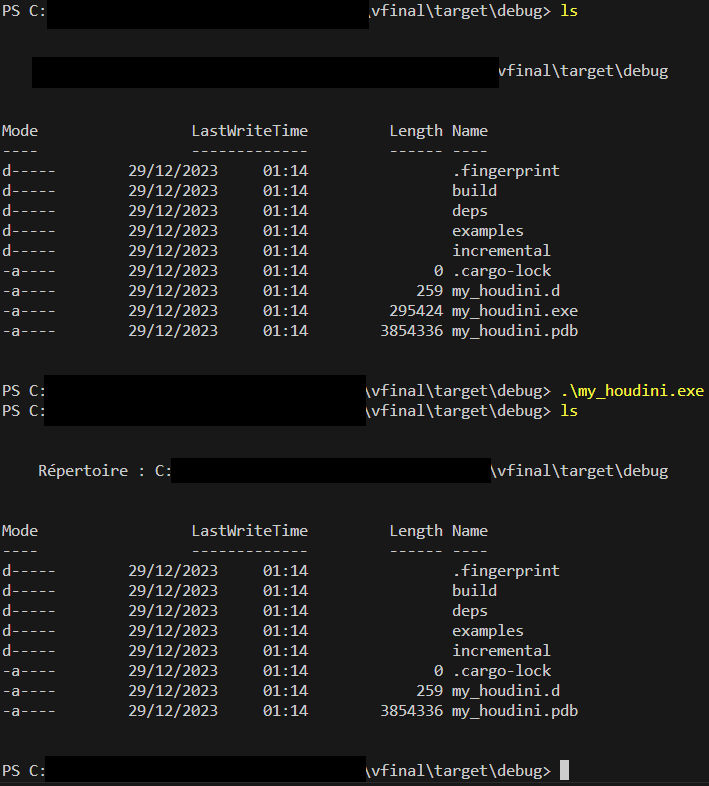

Self-deletion is a feature that some malware can incorporate into their code. This feature enables malware to remove or hide its own presence after having accomplished its main mission, or to avoid detection by security tools.
There are several ways to proceed, and they differ according to the platform. First of all, we're going to create the following tree structure, so that we can call up our self-deletion functionality whether we're on Linux or Windows (as seen in the cross-platform section):
.
├── Cargo.lock
├── Cargo.toml
└── src
├── main.rs
├── linux
├── lib.rs
└── mod.rs
└── windows
├── lib.rs
└── mod.rs
On Linux it's pretty easy, just get the relative path of the executable and delete it. To do this, create the file :
# src/linux/lib.rs
A function named :
disappear()
This function uses the :
current_exe()
remove_file()
From the crate: std
These functions retrieve the executable's relative path and remove it. The result is :
# src/linux/lib.rs
use anyhow::Result;
use std::{env::current_exe, fs::remove_file};
pub fn disappear() -> Result<()> {
let filename = current_exe()?;
let _ = remove_file(filename);
Ok(())
}
Now in the file :
src/linux/mod.rs```
In order to use the :
disappear()
In the :
src/main.rs```
You need to add the following code:
# src/linux/mod.rs
mod lib;
pub use lib::disappear;
Now for the Windows part, it's going to be more complicated, as Windows prevents the deletion of a file while it's running. To enable self-deletion on Windows, you'll need to take the following steps:
Open a HANDLE on the running process with DELETE access.
Rename the main file stream, :$DATA, to :whatyouwant.
Close the HANDLE.
Open a HANDLE again on the running process with DELETE access, but this time set the DeleteFile flag of the FileDispositionInfo class to TRUE.
Close the HANDLE to trigger file disposition.
The file is deleted.
You can't delete a mapped stream, but deleting a main stream also deletes the others, so that's what these steps are all about.
Here's a list of all the libs you'll need:
# src/windows/lib.rs
//Libs needed :
use anyhow::{Ok, Result};
use std::ffi::c_void;
use std::iter::once;
use std::mem::size_of;
use std::os::windows::ffi::OsStrExt;
use std::ptr::copy;
use std::{env, ffi::OsStr};
use windows::{
core::PCWSTR,
Win32::{
Foundation::{CloseHandle, BOOLEAN, HANDLE},
Storage::FileSystem::{
CreateFileW, FileDispositionInfo, FileRenameInfo, SetFileInformationByHandle, DELETE,
FILE_ATTRIBUTE_NORMAL, FILE_DISPOSITION_INFO, FILE_RENAME_INFO, FILE_RENAME_INFO_0,
FILE_SHARE_NONE, OPEN_EXISTING,
},
},
};
So we'll create in :
# src/windows/lib.rs
The function :
disappear()
This makes :
# src/windows/lib.rs
pub fn disappear() -> Result<()> {
let placeholder = b":legit___";
if let Some(filename) = env::current_exe()?.to_str() { //get_filename
let mut handle = open(&filename)?; //Step 1
rename(placeholder, handle); //Step 2
close(handle); //Step 3
handle = open(&filename)?;
dispose(handle); //Step 4
close(handle); //Step 5
};
Ok(())
}
In the above code, we start by initializing the placeholder that will be used to rename the main file stream. Next, we retrieve the absolute path of the executable as a String.
After preparing the necessary variables, we'll create a :
open()
This will be used to open a HANDLE on the running process with DELETE access.
To do this, you can use the :
CreateFileW
It is used to create, open or modify a file or device. It supports several operations, such as reading, writing and accessing specific attributes.
Here's an example, to open a HANDLE on the running process with DELETE access:
# src/windows/lib.rs
fn open(path: &str) -> Result<handle> {
let os_path: Vec<u16> = OsStr::new(path).encode_wide().chain(once(0)).collect(); //Convert &str to Vec<u16>
let handle = unsafe {
CreateFileW(
PCWSTR::from_raw(os_path.as_ptr()),
DELETE,
FILE_SHARE_NONE,
None,
OPEN_EXISTING,
FILE_ATTRIBUTE_NORMAL,
HANDLE::default(),
)
}?;
Ok(handle)
}
In this function, we start by converting the path variable of type &str'' to Vec<u16>, and then retrieve the raw vector pointer. And construct a raw PCWSTR pointer, for the lpfilename parameter of CreateFileW. Then we add the other necessary parameters to CreateFileW.
Once you've opened a HANDLE on the running process with DELETE access, you can perform step 2 by creating a :
rename(placeholder, handle)
This will rename the main file stream, :$DATA, to :whatyouwant, here's an example of code to do this:
# src/windows/lib.rs
fn rename(placeholder: &[u8; 9], handle: HANDLE) {
// Convert byte array `[u8; 9]` into 16-bit unsigned integer array `[u16; 9]`
let filename = placeholder.map(|b| b as u16);
// Calculate length of array `[u16; 9]` in bytes
let length = size_of::<[u16; 9]>();
// Initialize a FILE_RENAME_INFO structure with default values
let mut file_rename_info: FILE_RENAME_INFO = FILE_RENAME_INFO {
Anonymous: FILE_RENAME_INFO_0 {
ReplaceIfExists: BOOLEAN(0),
},
RootDirectory: HANDLE::default(),
FileNameLength: length as u32,
FileName: [0],
};
// Copy data from `filename` array to `FileName` field of `file_rename_info` structure
unsafe {
copy(
filename.as_ptr(),
file_rename_info.FileName.as_mut_ptr(),
length,
)
};
// Calculate the total buffer size required for SetFileInformationByHandle
let buffer_size = size_of::<[u16; 9]>() + size_of::<FILE_RENAME_INFO>();
// Call SetFileInformationByHandle to rename the file associated with the handle
let result = unsafe {
SetFileInformationByHandle(
handle,
FileRenameInfo,
&file_rename_info as *const _ as *const c_void,
buffer_size as u32,
)
};
// Ignore the result of the call and create a Result containing the result
let _ = Ok(result);
}
First of all, when creating the function, be sure to adapt the placeholder type to the size of the placeholder variable created in the disappear function.
So this function basically changes the main file stream, :$DATA, to the placeholder. The placeholder variable must be converted so that it can be passed as a parameter with the correct type in the FILE_RENAME_INFO structure, and then added as a parameter in the SetFileInformationByHandle function. All this will rename the main file stream, :$DATA by the placeholder and return the result.
We can now move on to step 3 by closing the HANDLE, which is done very simply in Rust with this function for example:
# src/windows/lib.rs
fn close(handle: HANDLE) {
if Some(unsafe { CloseHandle(handle) }).is_some() {
let _ = Ok(());
}
}
Simply call the :
CloseHandle()
And add our previously used handle.
We can then directly reopen a HANDLE on the running process, with DELETE access afterwards, using the function :
open()
which we created earlier.
For the last 2 steps, set the DeleteFile flag of the FileDispositionInfo class to TRUE and reuse the :
close()
We'll create a final function:
# src/windows/lib.rs
fn dispose(handle: HANDLE) {
let file_delete: FILE_DISPOSITION_INFO = FILE_DISPOSITION_INFO {
DeleteFile: BOOLEAN(1),
};
let result = unsafe {
SetFileInformationByHandle(
handle,
FileDispositionInfo,
&file_delete as *const _ as *const c_void,
size_of::<FILE_DISPOSITION_INFO>() as u32,
)
};
let _ = Ok(result);
}
This function takes as its parameter the handle created just before, then creates a variable that uses the Boolean DeleteFile set to 1, in the FILE_DISPOSITION_INFO structure. So that this variable can be set as a parameter in the function SetFileInformationHandle.
Reuse the :
close()
to close this HANDLE.
Now here's an example of our function:
disappear()
In file :
.
└── src
├── main.rs
The file Cargo.toml :
# Cargo.toml
[package]
name = "my_houdini"
version = "0.1.0
edition = "2021"
[target.'cfg(target_os="windows")'.dependencies]
windows = { version = "0.46.0", features = ["Win32_Foundation", "Win32_Storage_FileSystem", "Win32_System_LibraryLoader", "Win32_Security"] }
[profile.release]
opt-level = "s"
strip = true
lto = true
panic = "abort
[dependencies]
anyhow = "1.0.77"
winapi = "0.3.9"
This Cargo.toml file contains all the configuration needed to use all the code seen above.
The main.rs file:
# src/main.rs
#[cfg(target_os = "linux")]
mod linux;
#[cfg(target_os = "windows")]
mod windows;
#[cfg(target_os = "linux")]
use crate::linux::disappear;
#[cfg(target_os = "windows")]
use crate::windows::disappear;
fn main() {
if let Err(e) = disappear() {
eprintln!("Error : {:?}", e);
}
}
We use the cfg tags to use the right mods and crates according to the operating system in use.
Then all we have to do is call our disappear() function and display the error if it fails. If there's no error, our executable is deleted!

All the code seen in this course is provided in the following resource.